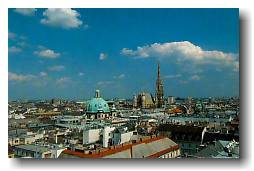
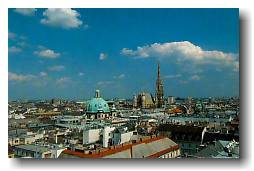
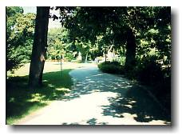
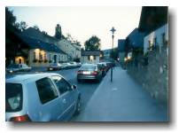
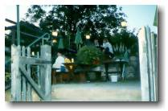
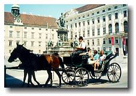
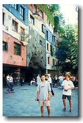
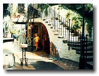

Vienna, Austria

|
Vienna, Austria  |
|
Trip #8: Monday July 19 to Wednesday July 21, 1999 This is the first time travelling alone since being in Europe, and I found it a lot easier to meet people. Beside me on the train to Vienna sat a 12 year old Chilean, who only spoke Spanish and German. We made conversation for about half an hour in German, but there were only about 10min worth of successful communication. When getting off the train, several SFU students saw my UBC badge and hollered at me. It turns out that a really close friend of theirs is Leanne Thoss, who not only went to my high school, but also my elementary school. Vienna seemed to have a very cold atmosphere. People seemed to be in a rush and everything seemed very posh. The atmosphere at my hostel was just as cold. While walking through the hallway, the echo of my footsteps and the feel of a tunnel made me realize how fortunate I was while in Prague. I knew the hostel in my next destination Budapest would be similar to the one in Prague (as someone in Prague recommended it to me), so I was already looking forward to being there. My room was shared with a couple of 35ish Italians, a young German, and a young Korean. The Italiens, who couldn’t speak English, got pretty pissed-off on the first night when the rest of us stayed up late chatting. To make the best of my first night, I went on the search for a Heurigen, which is a wine garden that’s unique to Vienna. I didn’t want to go to the most popular one, as I’ve heard that it’s populated with tourists. Instead, I hopped on a bus full of locals, and rode so far that I was the last one on it. I got off in the middle of nowhere looking for a specific Heurigen, but finding another. Thanks to the help of an older lady watering her garden and an American now living in Vienna who was on her nightly jog, I found a Heurigen in the district called Neustift am Wald. Being alone in a crowd of calm 40 to 60 year old locals, I had my one wine and left. Vienna was a huge city made for museum lovers. I was a little tired of museums, so I took a different approach to see Vienna. On the second day, I purchased "Vienna from A to Z" and decided to skim by most attractions. And I saw many. From museums to Palaces, I limited my time to see just the exterior. I did plan on entering Kunsthistorisches Museum (one of the largest art museums in Europe), but I never got the chance. For lunch, I ate at a Subway (the first one I’ve seen in Europe so far). A young American girl (Angela) who’s working in Vienna for several months sat near me and we struck up a conversation. She invited me to go out with her and her friends to dinner, a movie preview, a beer garden at a local Opera, and then to a club afterwards. She also offered to let me ditch my hostel and stay with her because of the curfew at my hostel and because she lived smack in the middle of downtown. After lunch, I took Angela’s advice and went to KunstHaus Wien. This is an apartment block that’s designed with irregular structural elements. Nothing inside had a 90deg corner. A very very colourful place. I suddenly ran out of film, so I rushed back to my Hostel. At the front desk was an urgent message. A phone call home proved how urgent it was. I found myself on a plane back to Vancouver the next day and didn’t return to Europe (Germany to resume my workterm) until 2 weeks later. |
 johnnyo@canada.com
johnnyo@canada.com